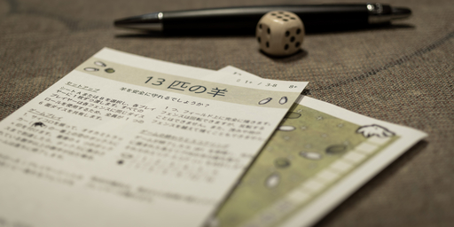

12 月 29日 ( 金 )
13 Sheep という Print and Play ゲームの和訳をした
13 Sheep という Print and Play Game を翻訳してセブンイレブンでプリントできるようにした。
オリジナルの PDF ファイルをオープンドキュメント形式のの odt ファイルに変換して英語のテキストを日本語に差し替えたので、英語のカード無くなってしまったけど。
オリジナルのライセンスが CC BY-NC-ND 4.0 Deed なのでそのまま公開したとしても問題ないのだけれど、どうせなら本家に取り込まれたほうがより多くの人が幸福になると思うので、後日、作者さんに連絡して日本語のデータを提供する方法を模索したい。
プリント期限は 2024/01/05 23:59、予約番号は LA4M E972。試してみたい人はセブンイレブンでプリントしてみてほしい。
一応どんなゲームなのか以下説明しておく。
必要なものはゲームの説明書、印刷したプレイボード、ペン、6 面のサイコロ 1 個だ。
ゲームの説明書のカードが以下の画像。日本語への翻訳は自分がした。

そして下図が使いきりのプレイボード。
このゲームは狼に襲われる前に羊を柵で囲って守り、守れた羊の頭数に該当する点数を得て、その点数を競う。もちろん遊ぶ相手がいなければソリティアとしてもプレイ可能。
狼は徐々に牧場に近寄ってくるが、それを表しているのが下図の赤線で囲った狼インジケーター (以下便宜上そう呼ぶ)。
狼インジケーターはロール毎に 1 つチェックを入れる。この狼インジケーターのチェックが、狼が少しずつ忍び寄ってきていることを表現している。
狼インジケーターの最後の 4 マスにサイコロの目が描かれている。チェックがこれらのマスに到達した時、ロールででたサイコロの目が描かれたサイコロの目以上の数字だった場合、なんらかの被害が狼によってもたらされ (たぶん羊が狼に襲われてしまうんだろう)、ゲームがそのロールで終了する。
羊を守るための柵は 1d6 を振ることで作ることができる。ダイスを降った結果に該当する柵をプレイボードに書き込む。羊を柵で囲い込むとその羊は狼から守られたことになる。
1d6 の結果に応じた柵の形状は下図の赤線で囲ったところに描かれている。
例えば最初のロールで 4 の目が出た場合、下図の赤線のように柵を記入する。
これを狼による被害がでるまで繰り返す。
狼による被害がでてゲームが終了したら柵で囲って守れた羊の数を柵毎に数え、数の赤線で囲まれた点数表に従って集計する。白い毛虫のようなものが羊で、星が点数だ。
集計した点数で最も高い点数を獲得したプレイヤーが勝者となる。
ソリティアとしてプレイする場合はハイスコア・トライアルになる。
またプレイボードに記入するということからプレイボードが消費されることになるが、手持ちのプレイボードを切らしたら公式サイトにプレイボードジェネレーターがあるので新規作成すれば良い。作成されるプレイボード上の羊と茂みはランダムに配置されるので、説明書同梱のプレイボードとかぶることはめったにないはず。
- Category :
- 日記
- blog
クリベッジのチートシートを作った
オウン・ユースのためにクリベッジ 2 ハンド用ペギング・チートシートを作成した。ダウンロードは Google Drive からできるようにした。
自分がペギングを中心にプレイ中に間違いそうなところだけをまとめたものであって、クリベッジのプレイ方法を網羅的にまとめたものではない。
記載内容は実質的世界標準の American Cribbage Congress (ACC) の公式トーナメントルールを採用した。
なお日本語版 Wikipedia を含めネット上の多くの日本語情報では、ディーラーの決定並びにディール手順が世界標準の ACC 公式トーナメントルールと異なる。日本人であっても世界標準ルールを知っておくことが望ましいと考えて、チートシートでは ACC 公式トーナメントルールに準ずるように記載した。
- Category :
- 日記
- blog